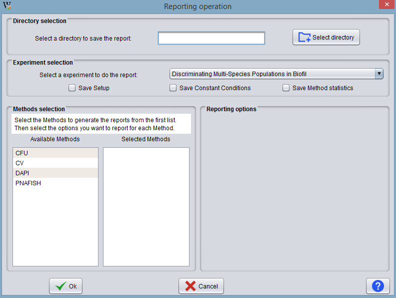
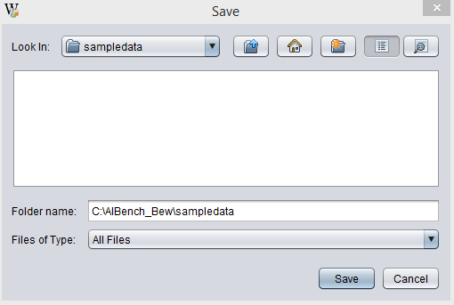
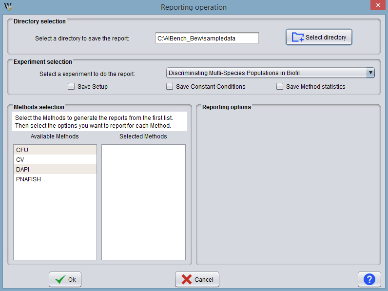
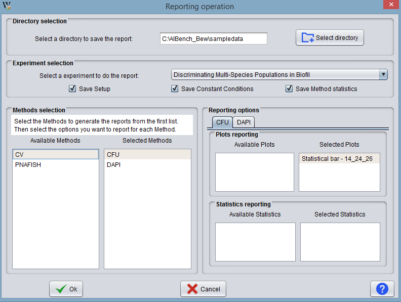

This operation generates a customised report about an experiment in HTML format.

The dialog is divided into 3 areas:
The user should indicate the local directory in which to save the report. Press the button Select directory and select a valid directory on the local machine.

The user should indicate the experiment to be reported. The user can select them from the experiment selection list.

Once the experiments are selected, the user can see that additional information are generated in the dialog. The program creates as many tabs as selected experiments. The user should then indicate which information he wants to include in the report of each experiment. The user may include basic information, constant conditions, method information and method data (including plots and statistical tests).

Once everything is specified, the user must press the Ok button to generate the report. In this example, we have selected all the possible options.